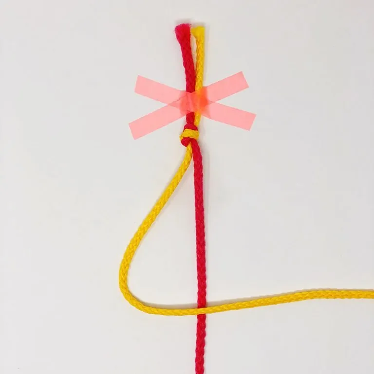
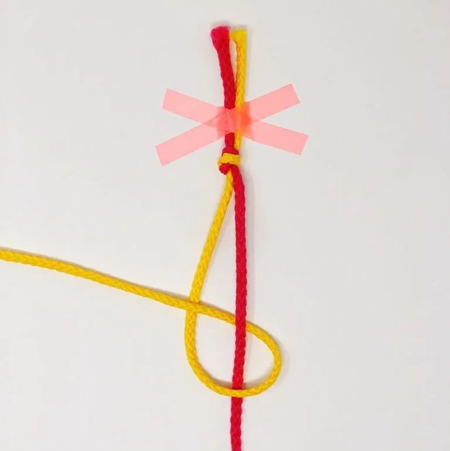
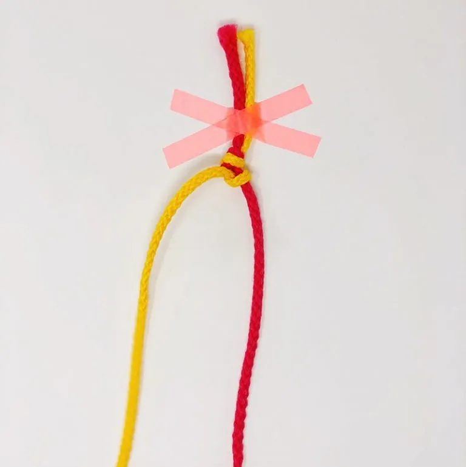
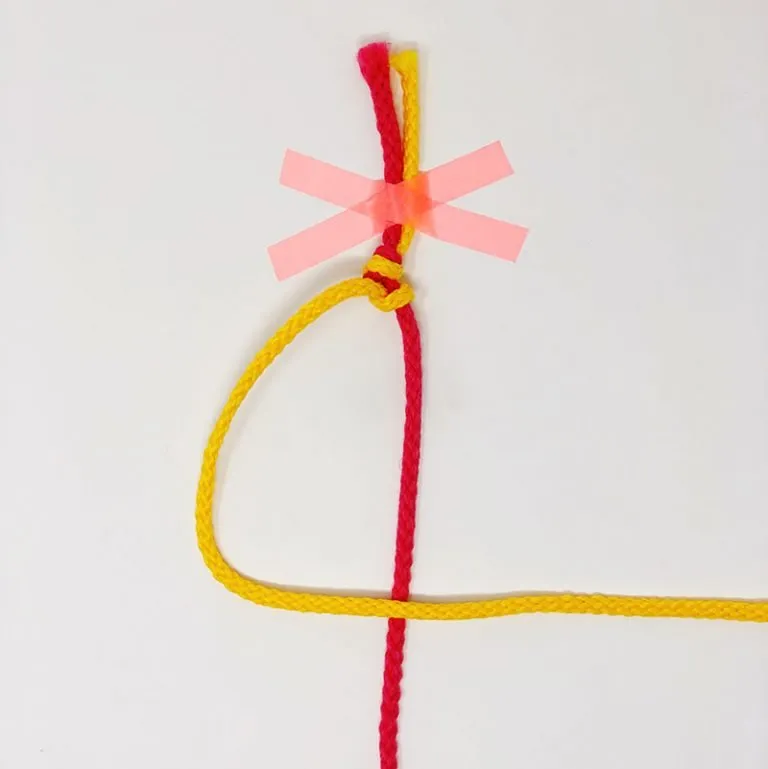
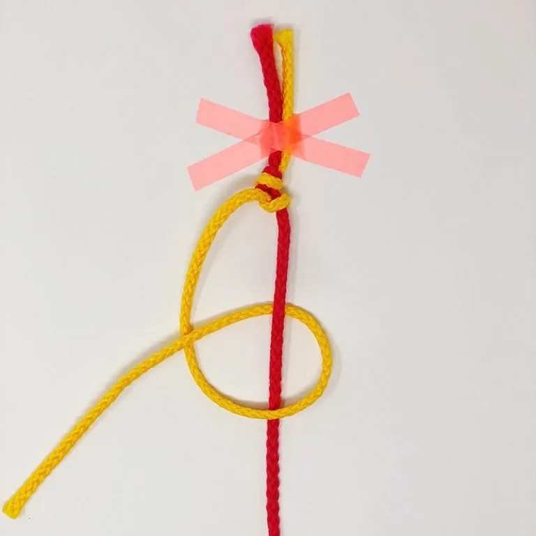
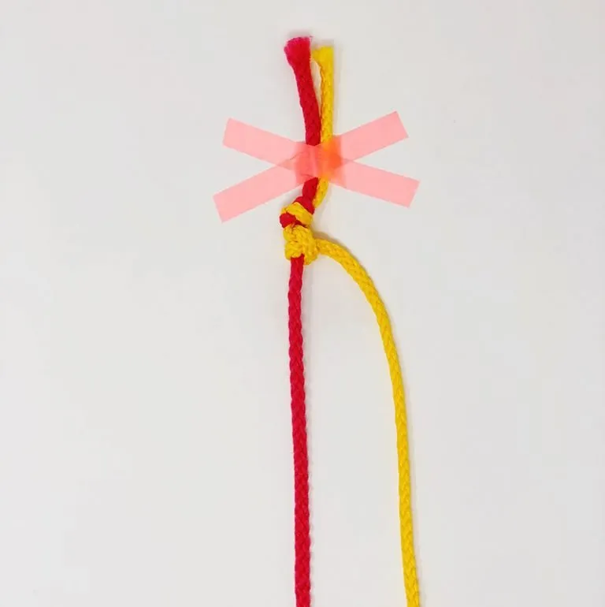

Пошаговая инструкция: рабочая нить идет слева направо.

Возьмите левую (рабочую) нить и наложите её поверх правой нити основы.

Сформируйте первую петельку в форме цифры «4» справа от основы.

Проденьте кончик рабочей нити снизу под нить основы и вытяните вверх.

Плотно затяните первый полуузел вверх к основанию фенечки.

Повторите движение: сделайте еще одну петельку «4» той же рабочей нитью.

Затяните второй полуузел. Теперь узел готов, а нить переместилась вправо.